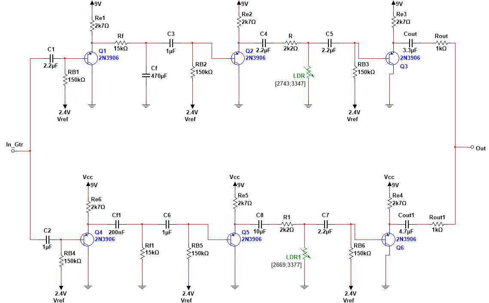
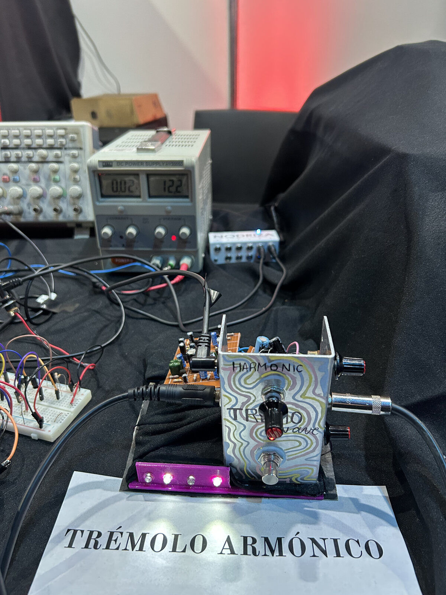
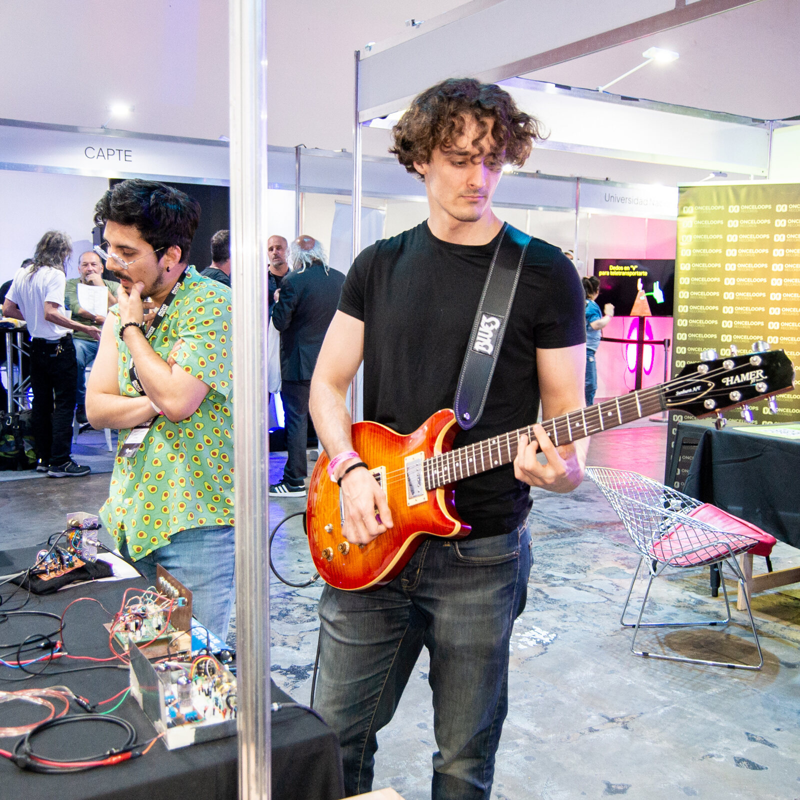
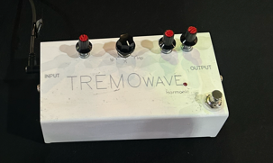

CTRL Control path
LFO→Depth→Gain→Phase splitter
Produces two opposing low-frequency control signals for the optocoupler LEDs.
02 / Analog electronics
Presented at CAPER & WorkShow · 2024
A two-band guitar effect that modulates low and high frequencies in opposition using optically controlled gain.


Overview
01The circuit splits the guitar signal into low- and high-frequency bands. Their levels vary in opposition, changing both the overall amplitude and the balance between bands.
The system was organized into two main sections:
System architecture
Produces two opposing low-frequency control signals for the optocoupler LEDs.
Separates the guitar signal, modulates each band independently, and passively recombines both branches.
Collaboration
02We worked together on circuit analysis, component selection, assembly, testing, troubleshooting, and the technical report.
We presented the pedal at WorkShow 2024 and CAPER 2024. The enclosure was revised between presentations, and the white enclosure shown below is the latest version.



Full documentation
The English report covers the control and audio circuits, filter design, component calculations, specifications, and conclusions.